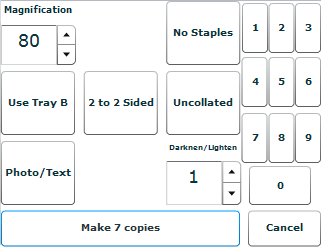
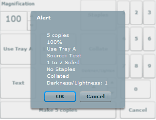

Spring 2010
Copy Machines. Everyone uses them - how hard could it be to design an interface for it?
As it turns out, there's a lot of work that goes into making one. As my first foray into formal user testing, I used think-aloud testing on several paper prototypes, gradually moving up to a fully function Flex prototype (sans copying, naturally.)
Along the way, I completed UARs and worked my way through several iterations, eventually presenting my findings and Flex prototype in a final presentation.
PDFs